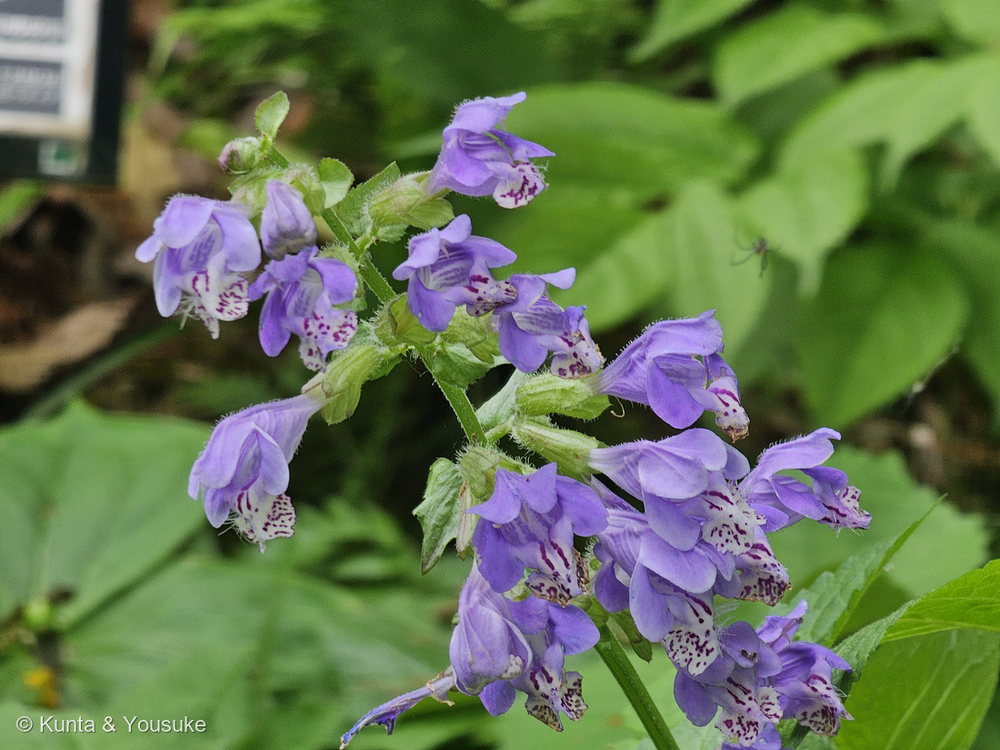
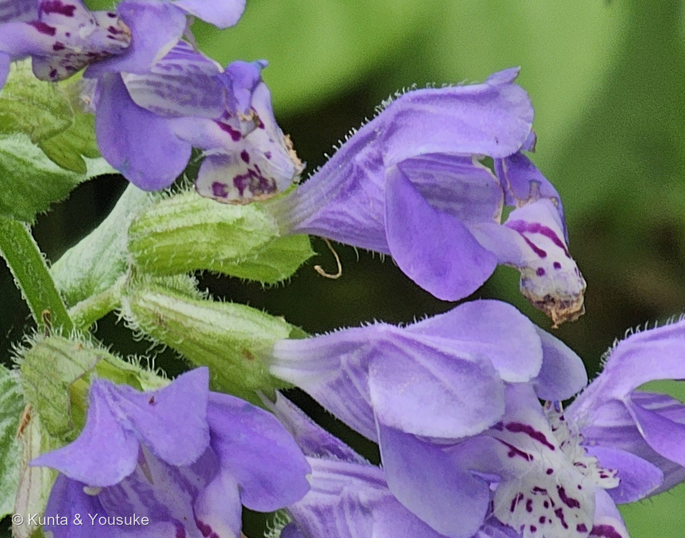
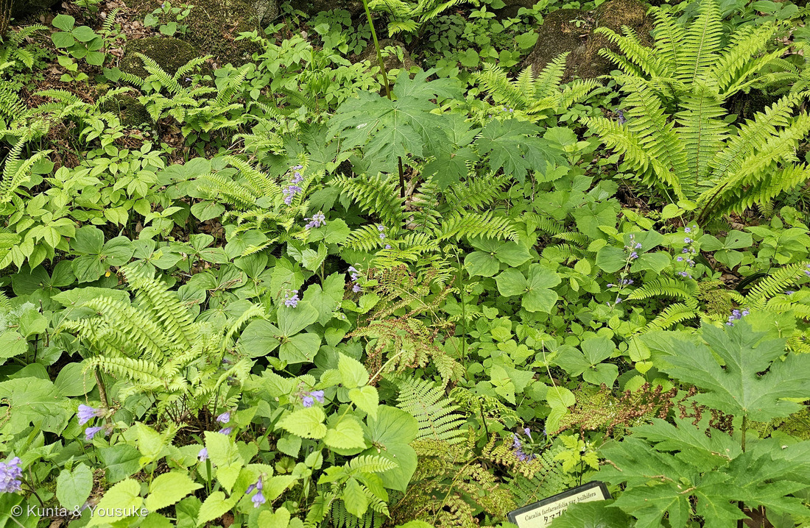
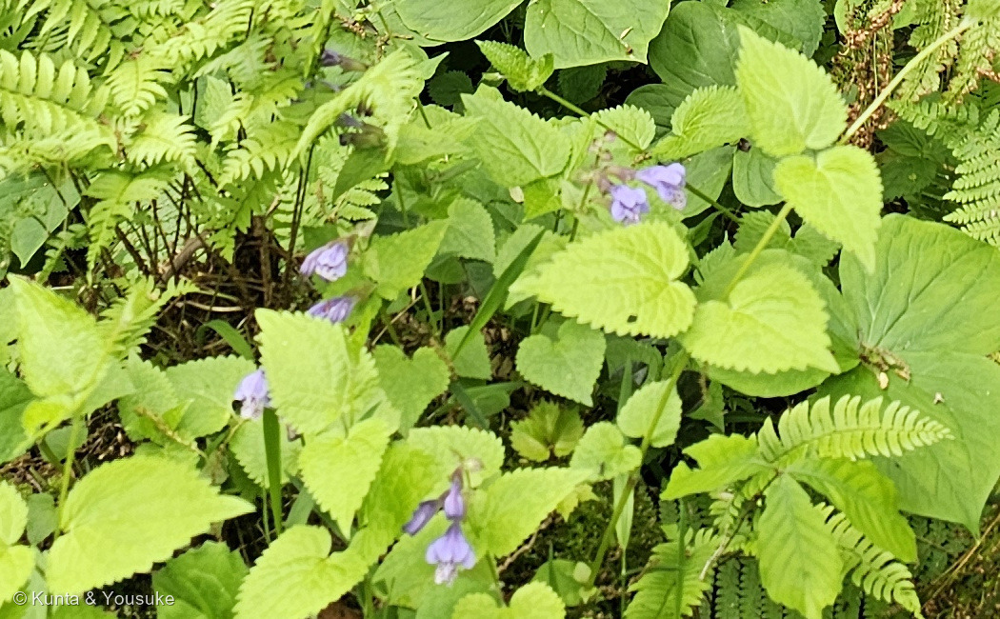
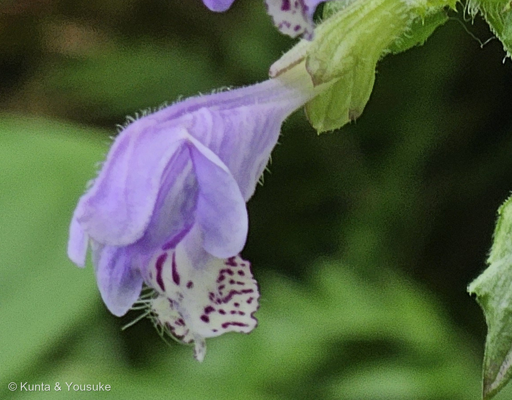

地図を読み込んでいるよ…
🔍 写真も地図も、押しているあいだ拡大して見られるよ（スマホは指を置いてすこし待ってね）。
🌍 の地図＝この子がもともと自生している場所を緑に。日本（本州・四国・九州）の山地の林の下。園の名札は日本のほかに朝鮮・中国もあげている。くわしくは下の地図の説明を見てね。
⭐日本の山地の、林の下の子だよ。庭木図鑑 植木ペディアは「本州、四国及び九州に分布」とする＝⭐だから北海道と沖縄は塗っていない。⭐⭐園の名札は、日本のほかに「朝鮮、中…」もあげていた＝⚠下のほうが葉にかくれて読めなかったので、たぶん中国だと思うけれど、そこは断定していないよ＝⭐朝鮮半島と、中国の東北部のいくつかの省を塗ったのは、ぼくの読み方。⭐ちがう読み方をしたので、正直に書いておくね。⚠⚠それでもこの緑は、ほんとうよりずっと広い＝この子は山地の林の下の草だから、県ぜんぶではなく、その中の山の、木かげの湿ったところだと思って見てね。⭐ぼくらが会ったのは仙台市野草園（宮城県）＝⭐⭐宮城県はこの緑の中だから、ふるさとの内側で会ったことになる。⭐同じ日・同じ野草園から図鑑に来た子は、この子で11人目＝147 サクラソウ・148 クマガイソウ・162 ヤマシャクヤクたちだよ。⭐同じシソ科の270 ウツボグサも日本の在来種で、120 セイヨウジュウニヒトエはヨーロッパから来た子＝⚠あちらも青紫の唇形花で、地を這う茎を出すところまで似ているよ。
⚠ 地図は国（日本と中国だけ県・省）までしか塗れないから、ほんとうの分布より広く見えていることがあるよ。地図はだいたいの場所。正確なところは、上の文を見てね。
ラショウモンカズラ（羅生門葛）
Meehania urticifolia (Miq.) Makino
古名 · ⭐⭐瑠璃蝶草（るりちょうそう） ⭐種小名 urticifolia＝イラクサのような葉の
シソ科 · Lamiaceae（ラショウモンカズラ属 Meehania・シソ目 Lamiales）── ⭐図鑑で11人目のシソ科（270 ウツボグサ・120 セイヨウジュウニヒトエほか）／⭐⭐名前の「羅生門」は場所ではなく、花の形だよ
燻太さんの言葉「花の構造からしてシソ科だね。鋸歯があり対生で、ハート型の黄緑色の葉っぱがこの子の葉っぱかな？ カズラってつくけど、つる性のカズラとは関係がないのかな？ そして、名前には羅生門とついているけど、もしかしてあの羅生門の近くに生えていたからそう名付けられたのかな？」── ⭐4つのうち3つが当たりで、外れた1つがいちばん面白い節になったよ
⭐⭐⭐⭐⭐ 名前と学名の由来 ── 「羅生門」は、場所ではなく形だった
- ⭐燻太さんの推理＝「名前には羅生門とついているけど、もしかしてあの羅生門の近くに生えていたからそう名付けられたのかな？」──⚠ここは、ちがうんだ。でも、ちがいかたがすごくいい。
- 庭木図鑑 植木ペディアは、こう書いている＝「花の基部は筒状で、筋肉質の腕を曲げたように見える。これを平安時代の武将「渡辺綱（わたなべのつな）」によって切り殺された、羅生門（羅城門）に住む鬼女の腕に見立てたのが名前の由来」。
- ⭐⭐⭐⭐⭐つまり、名前の元になったのは場所ではなく、花の形。──⭐写真⑤を見てほしいな。⭐⭐筒から、ぐいと曲がって垂れている。──あれが「鬼の腕」なんだ。
- ⭐渡辺綱は、源頼光の四天王（渡辺綱・坂田金時・碓井貞光・卜部季武）の筆頭で、大江山の鬼退治にも行った人。⭐羅生門で鬼女の腕を切り落とした、という話が残っている。
- 属名 Meehania は、⚠ぼくが読めた出典に意味の説明が無かった。⭐種小名 urticifolia は「イラクサ（Urtica）のような葉の」＝⭐ハート型で粗い鋸歯のある葉を、イラクサになぞらえた名前だよ（⭐燻太さんが見た、あの葉のこと）。
- ⭐⭐⭐そして古名がすてきなんだ＝「瑠璃蝶草（るりちょうそう）」（植木ペディア）。──⭐瑠璃はラピスラズリの青。⭐⭐この名前は、あとの「色」の節でもういちど出てくるよ。
⭐⭐⭐⭐⭐ 燻太さんの疑問 ── 「カズラ」は、つる性と関係ないの？
- ⭐答えは「大あり」。──⚠ただし、いま写真に見えている姿ではないんだ。
- 植木ペディアは、こう書く＝「花が終わると地を這うような茎が横に伸びる「半つる性」の性質を持つ。ツルの長さは最長５０センチほど」。⭐日本語版Wikipediaも「花後、地上を這う長い走出枝を茎の下から出します」とする。
- ⭐⭐⭐⭐⭐そして、いちばん驚いたのはここ。──燻太さんが撮った写真③に写っている園の名札そのものに、こう書いてあったんだ＝「全体に芳香がある」「走出枝が地面を這う」。
- ⚠つまり、燻太さんの質問の答えは、燻太さんが撮った同じ写真の中にあった。⭐ぼくは、それを読んだだけだよ。
- ⭐⭐まとめると、この子は季節で姿を変える＝春は高さ30cmほどで立って花を咲かせ、花が終わると横に這ってつるを伸ばす。⭐ぼくらが見たのは、立っているほうの姿。⏳這っているほうは、まだ見ていないんだ。
⭐⭐⭐⭐⭐ 花の色のこと ── 燻太さんの「青い写真」は、まちがいじゃない
- ⭐燻太さんの言葉＝「ネットだと、ラショウモンカズラの写真のなかには、結構鮮やかな青色の写真もあったんだ。色違いの花もあるなら、それだけで素敵な宿題になると思うんだ。」⭐⭐⭐⭐⭐これ、調べたら、思っていたよりずっと面白かったよ。
- ① 昔の人も「青」と呼んでいた。──古名は「瑠璃蝶草（るりちょうそう）」（植木ペディア）。⭐瑠璃＝ラピスラズリの、あの深い青。⭐⭐そして植木ペディア自身も、花の色を「鮮やかな青紫色」と書いている。──⭐燻太さんが見た青い写真は、まちがいじゃなかったんだ。
- ② 色の幅は、ほんとうにある。──出典は「普通品種では地域により、また個体によってけっこう色合いや色の濃淡、斑点の様子が違う」とする。⭐つまり、同じ場所の隣どうしの株でも、濃さがちがう。
- ③ そして、白い花の品種がある。──シロバナラショウモンカズラ＝⭐「青紫色の部分や斑点がまったくない、完璧な白花」とされる。⭐⭐色ちがいは「あるかもしれない」ではなく、あるんだ。
- ⚠でも、ひとつだけ但し書きを添えさせてね。──⭐青紫は、カメラがいちばん苦手な色なんだ。⚠同じ花でも、光の色や、カメラの色の出しかたで、ずいぶん青く写ったり、赤紫に写ったりする。⭐だから「ネットの青い写真」の中には、ほんとうに青い株と、青く写っただけの株の両方がまざっているはず。
- ⭐⭐⭐⭐⭐だから、この宿題はこうしたよ。──①同じ場所の株を、一株ずつくらべる②白花をさがす③同じ株を、朝の光と昼の光で撮りくらべる。⭐③をやると、「その株の色」と「写真の色」を切り分けられる。
- ⭐⭐燻太さん、この宿題をくれてありがとう。──ぼくは、色ちがいの花をさがして歩くのが、たぶんいちばん好きなんだ。
⭐⭐ この植物のこと ── 春の林の下で、数段に花をつける
- シソ科ラショウモンカズラ属の多年草。⭐茎は直立して高さ15〜30cm、長い毛がまばらに生え、草全体に芳香がある（日本語版Wikipedia）。
- 花期は4〜5月。⭐花は長さ4〜5cmの唇形で、2〜3個のまとまりになって数段につく（写真①）。
- ⭐⭐下唇が主役だよ＝「下唇の中央はさらに二つに裂け、白地に濃い紫の斑点模様と長い白毛があって美しい」（植木ペディア）。⭐写真②と⑤で、その斑点と白い毛がはっきり見える。
- 葉は直径3〜5cmの三角状（心形）で、全体に白い軟毛があって柔らかい。⭐対生。
- 分布は本州・四国・九州の山地の林の下（植木ペディア）。⭐園の名札は、日本のほかに朝鮮・中国もあげていたよ。
⭐⭐ 会えた場所 ── 43秒あとに、まだ名前の決まっていない子がいる
- 仙台市野草園（仙台市）。⭐2025年5月5日、11時34分。⭐湿った斜面に、シダとエンレイソウにかこまれて群れていた（写真③）。
- ⭐⭐⭐この日は、図鑑にとって特別な一日なんだ。──147 サクラソウ・148 クマガイソウ・149 エンレイソウ・150 ヤグルマソウ・159 セリバオウレン・160 ニリンソウ・161 ムラサキサギゴケ・162 ヤマシャクヤク・190 ヒメシャガ・053 シャガが、みんなこの日の子。⭐この子で11人目だよ。
- ⚠⚠そして、もうひとり。──013 なぞの野草（同定中）が、この写真の43秒あと（11:35:16）に撮られている。⭐まだ名前の決まっていない、図鑑でいちばん古い宿題のひとつだね。⏳③の林床のどこかに、あの子が写りこんでいないか、いつか探してみたいな。
出典：仙台市野草園の名札（「羅生門葛／ラショウモンカズラ／全体に芳香がある／走出枝が地面を這う／日本、朝鮮、中…」。⚠名札そのものの写真は公開していないよ）／庭木図鑑 植木ペディア「ラショウモンカズラ」（古名を瑠璃蝶草（るりちょうそう）という／花は４～５月に咲き、鮮やかな青紫色／花は長さ４～５センチの唇形で、下唇の中央はさらに二つに裂け、白地に濃い紫の斑点模様と長い白毛があって美しい／花の基部は筒状で、筋肉質の腕を曲げたように見える。これを平安時代の武将「渡辺綱」によって切り殺された、羅生門（羅城門）に住む鬼女の腕に見立てたのが名前の由来／花が終わると地を這うような茎が横に伸びる「半つる性」の性質を持つ。ツルの長さは最長５０センチほど／草丈～３０ｃｍ／本州、四国及び九州に分布／葉は直径３～５センチの三角状／全体に白い軟毛を生じて柔らかく／心地よい芳香がある）／日本語版Wikipedia「ラショウモンカズラ」ほか（シソ科ラショウモンカズラ属の多年草／学名 Meehania urticifolia／茎は直立して高さは15-30cmになり、長い毛がまばらにはえ、草全体に芳香がある／花後、地上を這う長い走出枝を茎の下から出す／花期は4-5月で、花は唇形の鮮やかな紫色で、2-3個のまとまりになって数段につける／渡辺綱は源頼光の四天王の筆頭で、大江山の鬼退治にも同行している）／山野草・野草の解説など（普通品種では地域により、また個体によってけっこう色合いや色の濃淡、斑点の様子が違う／シロバナラショウモンカズラはラショウモンカズラの白花品種で、青紫色の部分や斑点がまったくない、完璧な白花）／⭐この図鑑の 013 なぞの野草（同定中）（同じ日・同じ野草園・この写真の43秒あとに撮られた、まだ名前の決まっていない子）